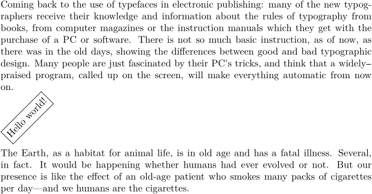
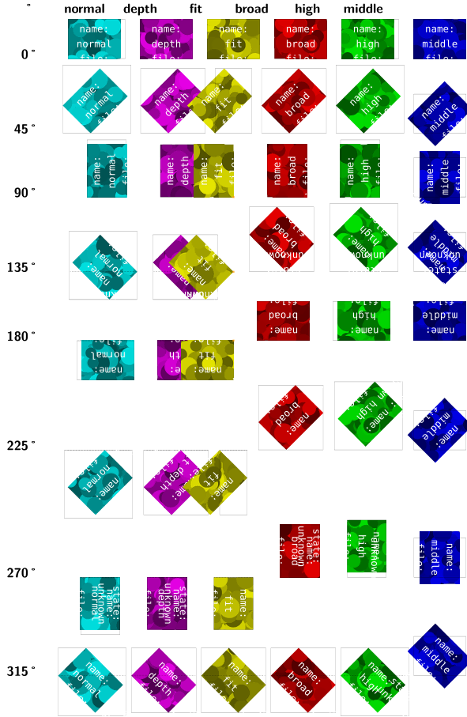

Contents
Summary
The command
\rotate
is used to rotate an object.
Settings
Description
With
\rotate
it is possible to rotate an element.
More info at Rotating.
Examples
Simple example
-
\setuppapersize[A5] \input zapf \rotate[rotation=45,frame=on,offset=2pt]{Hello world!} \input ward
- 
Different location settings
- 